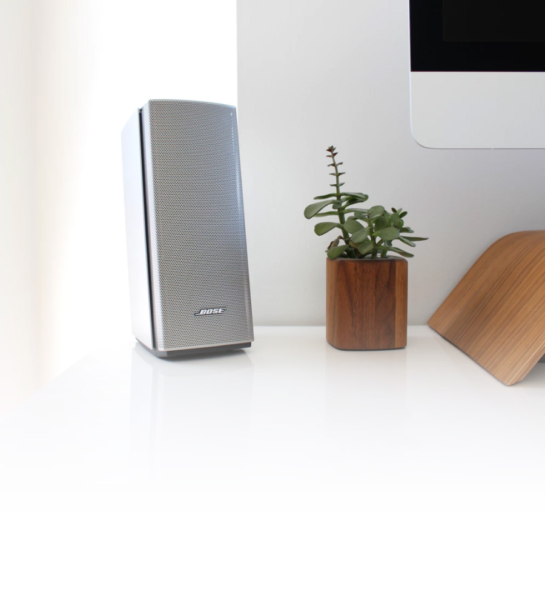

Gibraltar
Introducing 212/SE, our most powerful and agile subwoofer, designed exclusively for larger systems and rooms to allow superior state of the art speakers to spring to full voice.
View Product Details

“Almost immediately, word spread of a Welshman who had built this incredible sounding sub bass system, and soon enough audiophiles began searching out these legendary subs that were built like no other.”